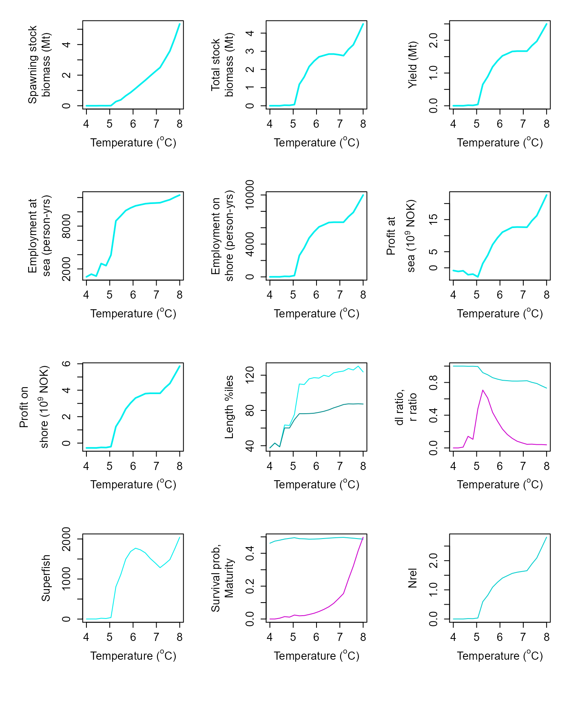
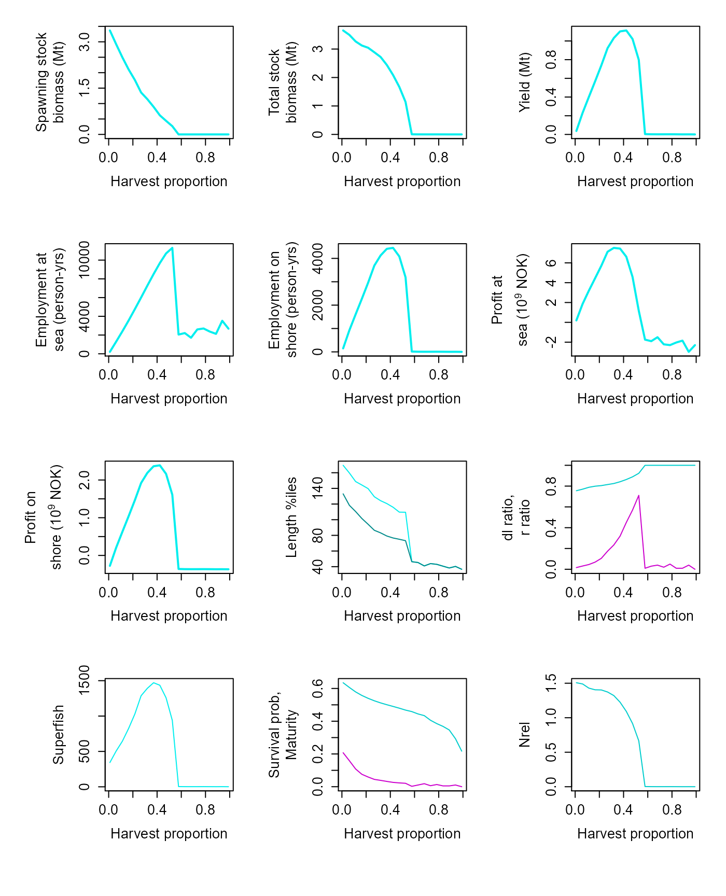
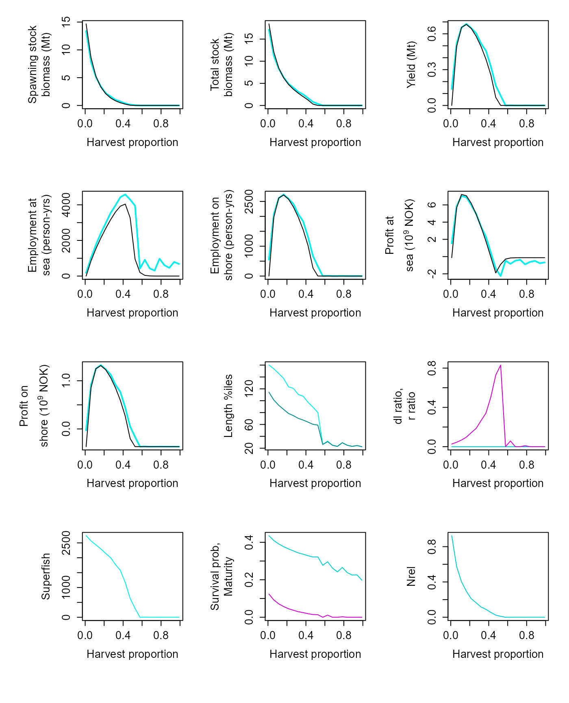

Simulating multiple populations at once
Jaideep Joshi
28 March 2022
compare_hscans.Rmd
re_simulate = T
# if one of the files doesnt exist, re-run the simulations
re_simulate = re_simulate | !file.exists("res_ibm_scan_T.Rdata")We can use the fishery simulator to simulate multiple populations (i.e., populations with different control parameters) at once. Suppose we want to look at fishery properties as a function of the harvest proportion.
Preparation
params_file = "../params/cod_params.ini"As usual, we begin with creating a prototype fish
# Create a prototype fish as usual
fish = new(Fish, params_file)
# Create a simulator
sim = new(Simulator, fish)
sim$equilibriateNaturalPopulation(1.93e3, 5.61, 2e6)## [1] 3.306157e+09 0.000000e+00 0.000000e+00 -4.925584e+08 0.000000e+00
## [6] 0.000000e+00 -1.249998e+08 -3.675586e+08 3.308932e+09 1.274555e+00
## [11] 5.822393e+08 1.420000e+08 6.580000e+02 7.755859e-01 1.325454e-02
## [16] 1.693070e+02 1.473857e+02 6.288879e-01 1.824441e-01 0.000000e+00Create a population to simulate
Then we create a population that will be reused by the simulator.
pop = new(Population, fish)
pop$set_superFishSize(5e6)
pop$verbose = FPlotting utility
source("../R/plot_scan.R")Simulate
We can now simulate populations with different harvesting rates.
Here, we simulate 20 populations with harvesting rates specified by the
hvec vector. The simulate_multi function
returns an array if dimensions {nsteps, length(hvec), 4}.
The last dimension is four because four utilities are returned: {ssb,
yield, employment, profit}.
nsteps = 200
hvec = seq(0, 0.99, length.out = 20)
lminvec = seq(45, 200, length.out = 3)
Tvec = seq(4, 8, length.out = 20)
if(re_simulate){
res_ibm_full = sim$simulate_multi_2d(pop, Tvec, c(45), c(0.44), nsteps, 1.93e3, T)
save(res_ibm_full, file="res_ibm_scan_T.Rdata")
} else{
load("res_ibm_scan_T.Rdata")
}
lf = 45
arr = res_ibm_full
names = pop$colnames
dat_ibm = data.frame(matrix(ncol=length(names), nrow=0))
colnames(dat_ibm) = names
for (i in 1:length(Tvec)){
v_ibm = colMeans(arr[101:200, 1, 1, i,])
dat_ibm[nrow(dat_ibm)+1,] = v_ibm
}
plot_scan(dat_ibm, xname = expression("Temperature ("^o*"C)"), xvec = Tvec)
Effect of harvest proportion (new model)
Generate reference
dat_ref = data.frame(matrix(ncol=7, nrow=0))
colnames(dat_ref) = c("ssb", "tsb", "yield", "employment.sea", "employment.shore", "profit.sea", "profit.shore")
for (ih in 1:length(hvec)){
res = simulate(hvec[ih], lf, F)
v = colMeans((res$summaries %>% select(SSB, TSB, Y, D.sea, D.shr, P.sea, P.shr))[101:200,])
dat_ref[nrow(dat_ref)+1,] = v
}
fish = new(Fish, "../params/cod_params.ini")
sim = new(Simulator, fish)
sim$equilibriateNaturalPopulation(1.93e3, 5.61, 2e6)## [1] 2.926447e+09 0.000000e+00 0.000000e+00 -4.925584e+08 0.000000e+00
## [6] 0.000000e+00 -1.249998e+08 -3.675586e+08 3.042178e+09 1.886227e+00
## [11] 8.464860e+08 1.000000e+08 8.310000e+02 7.968857e-01 2.177760e-02
## [16] 1.731212e+02 1.492023e+02 5.947209e-01 1.218130e-01 0.000000e+00
pop = new(Population, fish)
# pop$par$dsea = 0.02
pop$set_superFishSize(5e6)
pop$verbose = F
nsteps = 200
hvec = seq(0.01, 0.99, length.out = 20)
lminvec = seq(45, 200, length.out = 3)
Tvec = seq(4, 8, length.out = 20)
if(re_simulate){
res_ibm_full = sim$simulate_multi_2d(pop, c(5.61), c(45), hvec, nsteps, 1.93e3, T)
save(res_ibm_full, file="res_ibm_scan_h.Rdata")
} else {
load("res_ibm_scan_h.Rdata")
}
lf = 45
arr = res_ibm_full
names = pop$colnames
dat_ibm = data.frame(matrix(ncol=length(names), nrow=0))
colnames(dat_ibm) = names
for (i in 1:length(Tvec)){
v_ibm = colMeans(arr[101:200, i, 1, 1,])
dat_ibm[nrow(dat_ibm)+1,] = v_ibm
}
plot_scan(dat_ibm, xname = expression("Harvest proportion"), xvec = hvec) #, dat_ref=dat_ref)
Effect of harvest proportion (Dankel et al. model)
We also look at the predictions of the Dankel et al model implementation, and compare it with their results.
fish = new(Fish, "../params/cod_params_dankel22.ini")
sim = new(Simulator, fish)
sim$equilibriateNaturalPopulation(1.93e3, 5.61, 2e6)## [1] 1.487533e+10 0.000000e+00 0.000000e+00 -4.925584e+08 0.000000e+00
## [6] 0.000000e+00 -1.249998e+08 -3.675586e+08 1.769984e+10 2.177072e+01
## [11] 7.756002e+09 9.240000e+08 6.904000e+03 0.000000e+00 2.394962e-02
## [16] 1.626982e+02 1.174201e+02 4.371944e-01 1.320012e-01 0.000000e+00
pop = new(Population, fish)
pop$par$recruitmentAge = 1
pop$par$dmax = 30000
pop$set_superFishSize(5e6)
pop$verbose = F
nsteps = 200
hvec = seq(0.01, 0.99, length.out = 20)
lminvec = seq(45, 200, length.out = 3)
Tvec = seq(4, 8, length.out = 20)
if(re_simulate){
res_ibm_full = sim$simulate_multi_2d(pop, c(5.61), c(45), hvec, nsteps, 1.93e3, T)
save(res_ibm_full, file="res_ibm_scan_h_Dankel22.Rdata")
} else {
load("res_ibm_scan_h_Dankel22.Rdata")
}
lf = 45
arr = res_ibm_full
names = pop$colnames
dat_ibm = data.frame(matrix(ncol=length(names), nrow=0))
colnames(dat_ibm) = names
for (i in 1:length(Tvec)){
v_ibm = colMeans(arr[101:200, i, 1, 1,])
dat_ibm[nrow(dat_ibm)+1,] = v_ibm
}
plot_scan(dat_ibm, xname = expression("Harvest proportion"), xvec = hvec, dat_ref=dat_ref)